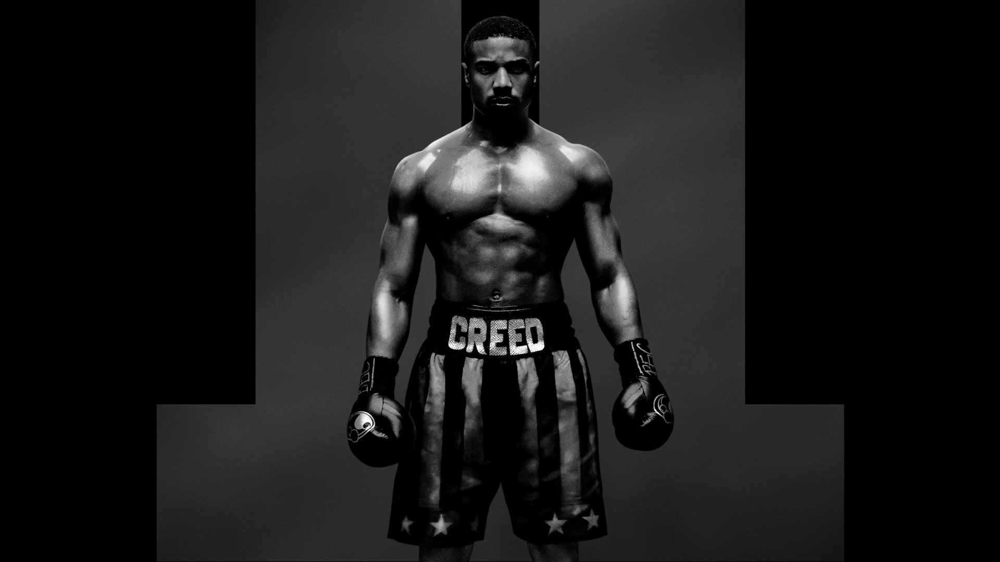
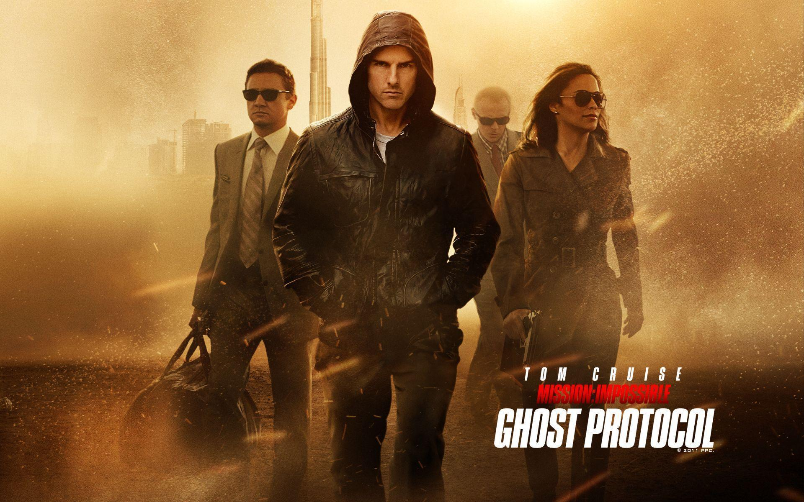
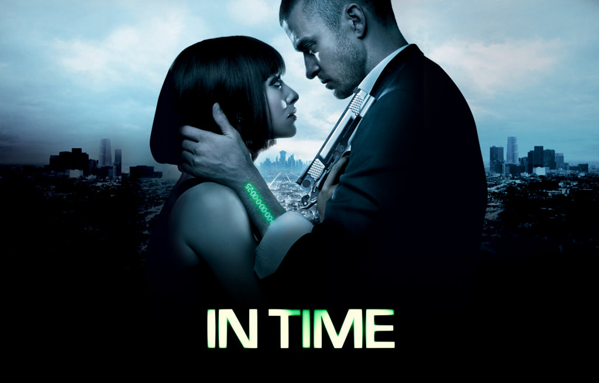
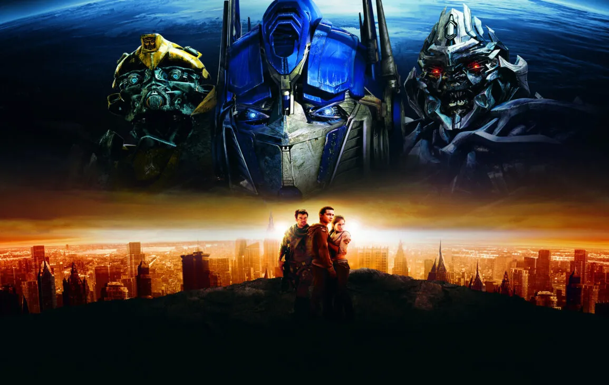
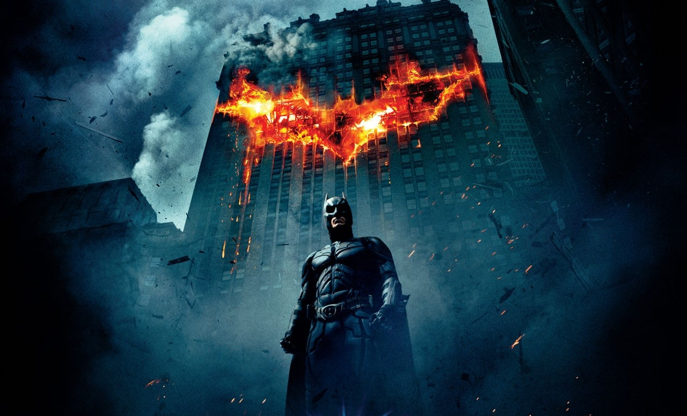

Creed II, il film diretto da Steven Caple Jr., segue la storia di Adonis Creed (Michael B. Jordan), un giovane pugile professionista, figlio del grande Apollo Creed e allenato dallo storico rivale del padre, Rocky Balboa (Sylvester Stallone). Adonis ha una felice storia d'amore con Bianca (Tessa Thompson), che diventerà presto sua moglie. Il suo talento fa sì che in breve tempo conquisti la cintura di campione mondiale di pesi massimi. Ben presto dovrà scontrarsi con un altro giovane promettente del pugilato, il russo Viktor Drago (Florian Munteanu), figlio di Ivan Drago che tutti ricorderanno per aver mandato al tappeto e aver ucciso Apollo Creed, per poi essere stato sconfitto proprio da Rocky Balboa molti anni prima.
Stupenda
Mission Impossible – Protocollo fantasma è un film del 2012 diretto da Brad Bird. La spia americana dell'Agenzia IMF Ethan Hunt (Tom Cruise) è stato rinchiuso in un carcere russo per accattivarsi le simpatie di Bodgan, un detenuto che possiede informazioni su un uomo chiamato Cobalt, uno spietato terrorista. Dopo essere evaso con l’aiuto degli agenti Benji Dunn e Jane Carter, Hunt deve introdursi nel Cremlino, ma durante la missione un messaggio radio inviato sulla frequenza dell’IMF autorizza lo scoppio di un ordigno. In seguito all'attentato, Ethan scopre che il Presidente, a causa dei sospetti sulla squadra che agisce sempre al limite della legalità, ha attivato il Protocollo Fantasma: questo significa che per gli agenti del suo team non c’è nessun tipo di appoggio per la fuga o il rientro, né garanzia di qualunque tipo da parte del governo degli Stati Uniti. Hunt, insieme a William Brandt (Jeremy Renner), un analista dell’IMF e il resto della squadra rimangono soli per cercare di sventare un attacco nucleare e riscattare il nome dell’IMF.
Eccellete
In Time è un film del 2011 scritto e diretto da Andrew Niccol. Le vicende narrate sono ambientate nell'anno 2169, in un’era in cui gli individui sono geneticamente programmati per vivere fino all'età di 25 anni. Da quel momento in poi, attraverso un chip installato nel loro braccio, parte un conto alla rovescia che permette loro di vivere solo un anno al termine del quale sono destinati a morire. Tuttavia, è possibile allungare la propria speranza di vita: infatti il tempo è, in quest'era, divenuto una vera e propria valuta, attraverso la quale la gente viene pagata. Così si è venuto a creare un mondo in cui i ricchi possono vivere pressoché per sempre, senza, per altro, invecchiare, mentre i poveri cercano continuamente di guadagnarsi qualche altro giorno da vivere. Proprio in questo contesto, Will Salas (Justin Timberlake), venticinquenne da tre anni, decide, a seguito di un fortuito evento che gli permette di guadagnare un secolo di vita, di tentare il tutto per tutto per sovvertire l'ordine precostituito del suo mondo e riportare l'uguaglianza tra ricchi e poveri.
Mitica
Transformers è un film del 2007 diretto da Michael Bay. Diverse migliaia di anni fa, il pianeta Cybertron fu consumato da una guerra civile tra le due fazioni di Transformer: gli Autobot, guidati da Optimus Prime, che combattevano per la pace e la giustizia e i Decepticon, guidati da Megatron, che invece combattevano per la tirannia. L’oggetto della guerra era il possesso dell’AllSpark, un manufatto mistico in grado di creare mondi e la vita su di essi. Optimus lo spedì nello spazio profondo per non farlo cadere nella mani dello spietato Megatron. Tuttavia il leader dei Decepticon riuscì a localizzarlo sul pianeta Terra, dove però si schiantò rimanendo congelato nelle profondità del circolo polare artico. Nel 1895 l'esploratore Archibald Witwicky scoprì casualmente la carcassa aliena che impresse accidentalmente le coordinate dell’AllSpark nei suoi occhiali. Nel presente, gli occhiali sono finiti in possesso del suo pronipote Sam Witwicky (Shia LaBeouf), un ragazzo eccentrico che sogna di comprarsi un’auto tutta sua. Dopo tanti sforzi, Sam riesce ad acquistare la sua prima macchina, una Chevrolet Camaro arrugginita, scoprendo con grandissima sorpresa che l’auto ha una vita propria. Sam e la sua cotta del liceo Mikaela Banes (Megan Fox) vengono salvati da un attacco Decepticon proprio dalla sua auto che risulta essere un Autobot di nome Bumblebee. Bumblebee porta Sam e Mikaela ad incontrare Optimus Prime e gli altri Autobot che gli rivelano che se Megatron e la sua fazione ottenessero l'AllSpark, trasformerebbero le macchine della Terra in un nuovo esercito e sterminerebbero l'umanità. Il gruppo si reca a casa di Sam per recuperare gli occhiali, ma vengono catturati dagli agenti del Settore Sette, un ramo governativo paramilitare top-secret, guidato da Seymour Simmons. Optimus ottiene gli occhiali ma Bumblebee, Sam e Mikaela vengono portati in una misteriosa area segreta…
Stupenda
Il Cavaliere Oscuro, il film diretto da Christopher Nolan, con Christian Bale, e basato sul fumetto della DC Comics, Batman, è il secondo capitolo della trilogia diretta da Nolan, e narra le vicende del celebre supereroe alle prese con il cattivissimo e folle Joker (Heath Ledger). Ad aiutare Batman ci sono il commissario Gordon (Gary Oldman) e il procuratore distrettuale Harvey Dent (Aaron Eckhart), attuale fidanzato dell'amica di infanzia di Bruce Wayne, Rachel (Maggie Gyllenhaal). Dopo un periodo di tranquillità per la città di Gotham, in cui i cattivi sono tenuti a bada da Batman, entra in scena Joker, l'inquietante pagliaccio dall'identità segreta, che mette a segno una rapina ad una banca collusa con la mafia. Si presenta ad una riunione dei boss mafiosi e propone un'alleanza per eliminare Batman, ma questi si convincono solo dopo che Batman e Dent riescono ad incastrarli. I malavitosi aderiscono quindi al piano di Joker, che prevede che Batman riveli la sua identità, pena la morte di una persona ogni giorno; inizia così ad eliminare personaggi di spicco quali un giudice, un commissario e prova con lo stesso Dent, che però viene salvato da Wayne. Quest'ultimo, visto il precipitare degli eventi, si decide ad uscire allo scoperto, ma viene preceduto da Dent che si costituisce come Batman. Joker cerca di attaccare Dent, ma si scontrerà con il vero Batman. Nel frattempo la mafia rapisce Dent e Rachel per vendicarsi, e l'uomo pipistrello, mettendo sotto torchio Joker, viene a sapere che i due si trovano in due magazzini diversi e pronti a saltare in aria; dall'esplosione, Dent sopravvive con un'ustione alla metà del viso, mentre la ragazza muore; distrutto dalla perdita della fidanzata e dai fallimenti per difendere la città dalla criminalità, Dent abbandona il suo lato umano e assume l'identità del cattivo Due Facce, che si contraddistinguerà per affidare le sue decisioni (e le sorti delle sue vittime) al lancio di una moneta. Nel frattempo Joker continua a seminare panico, divertendosi a costringere Gotham a decisioni assurde e disperate, mentre Due Facce mette in atto la sua personale vendetta per vendicare la morte di Rachel. La fine della città sembra segnata, finché un'insperata giustizia e solidarietà trionfano, grazie anche all'aiuto di Batman, che per salvare Gotham sacrificherà la sua reputazione di eroe buono. Il Cavaliere Oscuro è il sequel di Batman Begins (2005) e verrà seguito dalla terza e ultima parte, Il Cavaliere Oscuro - Il Ritorno (2012).
Stupenda
